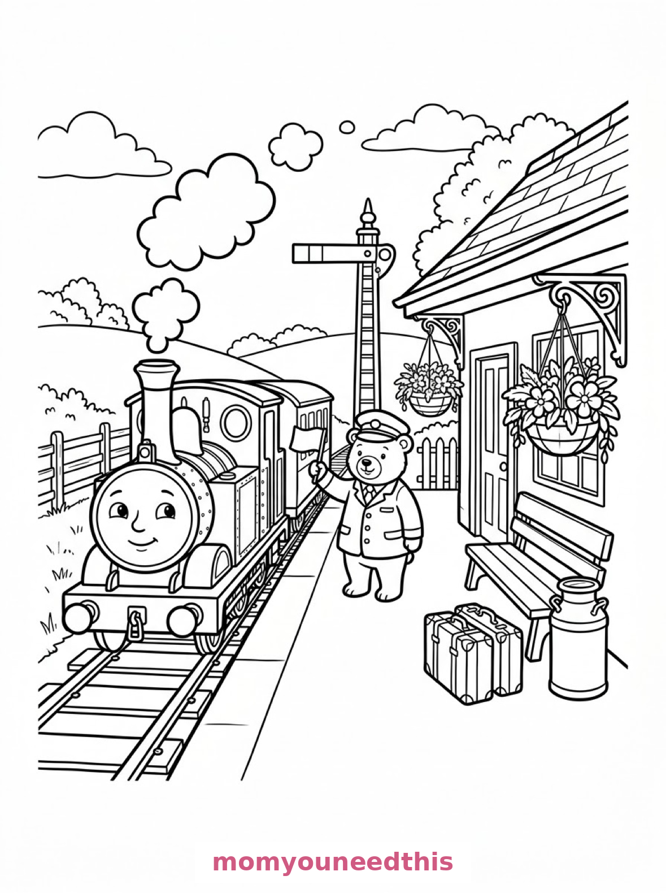
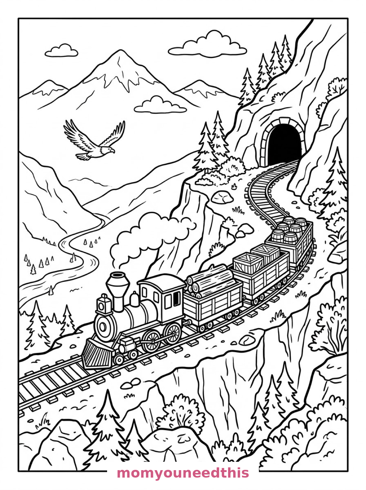

Free Train Coloring Pages Steam, Station & Freight Printables
These free train coloring pages roll from a stone viaduct to a country station platform to a mountain bend — a steam engine with two carriages, a little train with a smiling face, and a freight train under an eagle. Download the set below, print at home on letter-size paper, and let the coloring fun begin. No signup needed.
Last updated: October 23, 2026
Quick Answer
Yes — this page has three free printable train coloring pages: a steam locomotive crossing a stone viaduct, a little train waiting at a country station with a stationmaster bear, and a freight train curving around a mountain bend. Bold outlines and big spaces, made for little hands. Download, print on letter-size paper, and hand over the crayons — no signup, no cost.
At a Glance
- Ages: 3–8
- Pages: 3 free printables
- Format: Print at home, letter size
- Cost: Free, no signup
- Supplies: Crayons or markers
- Time: 10–20 minutes
🚂 Steam Train on the Viaduct Coloring Page

🎨 Download Your Free Steam Train Coloring Page
A steam locomotive pulls two passenger carriages over a stone viaduct, puffs of steam curling from its funnel, with a river winding below, pine trees on the hillsides and a station house in the valley — bold outlines, big spaces, zero signup.
⬇️ Download Free Steam Train Page 🖨️ Print Steam Train Page🎁 Free printable for preschoolers & kids
🐻 Little Train at the Country Station Coloring Page

🎨 Download Your Free Station Train Coloring Page
A little train with a friendly smiling face waits at a country station platform where a stationmaster bear holds a flag, with suitcases, a milk churn, a bench, a signal post and hanging flower baskets — bold outlines, big spaces, zero signup.
⬇️ Download Free Station Train Page 🖨️ Print Station Train Page🎁 Free printable for preschoolers & kids
⛰️ Freight Train in the Mountains Coloring Page

🎨 Download Your Free Freight Train Coloring Page
A freight train carrying logs, crates and barrels curves around a mountain bend, with a tunnel mouth in the rock face ahead, snowy peaks behind and an eagle circling above the valley — bold outlines, big spaces, zero signup.
⬇️ Download Free Freight Train Page 🖨️ Print Freight Train Page🎁 Free printable for preschoolers & kids
More Coloring Pages
Tap any picture to open its theme page and download the free printable.


🚂 How To Use This Page
- Browse the three designs and pick the train your child will love most.
- Tap download or print under that design — the file opens full-size, ready for letter-size paper.
- Print a couple of copies of the freight train — every load of logs and crates deserves its own colors.
- Color together with crayons or markers and make the whistle sounds.
🛤️ Why Kids Love Train Coloring Pages
Trains have everything a kid wants in a coloring page: big satisfying shapes, wheels that beg to be colored, and a journey to imagine. Where is the freight train going? Who is the stationmaster bear flagging in? These pages don't just ask for colors — they ask for stories.
Train pages also grow with your child. A toddler can fill the engine in one color and be done. An older kid can spend real time on the viaduct stones, the flower baskets and the individual crates. Few printables serve both ends of the age range this well. The wheels, the windows and the wide open sky above the track give every age something to claim as their own favorite part of the whole picture.
🚂 Meet the Three Train Scenes on This Page
The steam train on the viaduct. A steam locomotive pulls two passenger carriages over a stone viaduct, puffs of steam curling from its funnel, with a river winding below, pine trees on the hillsides and a station house in the valley. It is the grandest page in the set — a proper railway landscape to build.
The little train at the station. A little train with a friendly smiling face waits at a country station platform where a stationmaster bear holds a flag, with suitcases, a milk churn, a bench, a signal post and hanging flower baskets along the platform. It is the sweetest page in the set and the easiest — perfect for the youngest engineers.
The freight train in the mountains. A freight train carrying logs, crates and barrels curves around a mountain bend, with a tunnel mouth in the rock face ahead, snowy peaks behind and an eagle circling above the valley. It is the most adventurous page in the set — the tunnel is begging to be colored dark and mysterious.
✏️ Train Coloring Tips
- Give every carriage its own color. Red engine, blue carriage, green carriage — or all three in a rainbow. Trains are made for bold color blocks.
- Color the steam soft. Leave the steam puffs white or shade them the lightest gray — they read as steam when everything around them is colored.
- Make the tunnel dark. A dark tunnel mouth with a bright train coming out of it is the most dramatic thing on the page.
- Spot the little travelers. The stationmaster bear, the eagle, the suitcases — hunting the extras is half the fun of a train page.
🚂 Coloring Pages for Different Ages
For ages 3 to 4, start with the little station train. One big smiling engine, chunky suitcases and flower baskets are all a little colorer needs.
For ages 5 to 6, the steam train is the sweet spot. The engine and two carriages are big and bold, and the viaduct, the river and the pines add a real landscape to build.
For ages 7 to 8, hand over the freight train. The logs, the crates, the tunnel and the mountain bend reward careful, detailed coloring — and the eagle overhead is a lovely small detail to finish with.
🛤️ More Train Fun After Coloring
Build a paper railway: line the three pages up end to end and your child has a route — from the viaduct, through the station, into the mountain tunnel. Toy trains can drive the whole line across the floor.
For more vehicles with big wheels, visit the truck coloring pages — and for the working vehicles that keep the station safe, the police car coloring pages are waiting on the next platform.
🔗 More Free Printables You’ll Love
- Free Truck Coloring Pages Trucks to print and color, with bold outlines and big spaces.
- Free Monster Truck Coloring Pages Big wheels and bold designs to print and color.
- Free Police Car Coloring Pages A station, a school crossing and a parade to color.
- All Free Coloring Pages Browse every free coloring page on the site, organized by theme.
❓ Train Coloring Pages FAQ
Are these train coloring pages really free?
Yes — all three designs on this page are free original printables from MomYouNeedThis. Download them, print them at home, and color — no signup and no cost.
What ages are these coloring pages best for?
Kids ages 3 to 8 get the most from this set. The little station train is the gentlest start for younger children, while the viaduct and mountain scenes have the detail older kids enjoy.
How do I print a coloring page?
Tap the download button under the design you want, then print the file on regular letter-size paper. The print button opens the full-size page in a new tab if you prefer to print from there.
Does the little station train have a face?
Yes — the little train at the country station has a friendly smiling face on its front. Kids love it, and it makes that design the favorite with the youngest colorers.
Can I make a train coloring book from these pages?
Yes — print all three designs, stack them in order, and staple along the left edge. Add a cover sheet with your child's name for a finished homemade train coloring book.